|
”Diseño de Robots ápodos: Cube Revolutions”. Robolid05. ETSII de Valladolid. UVA. Abril-2005 |
|
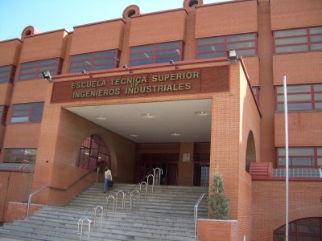 |
Título: “Diseño de Robots ápodos: Cube Revolutions”
Evento: Concurso nacional de Robots: Robolid05.
Organiza: AMUVa, Asociación de Microbótica de la Universidad de Valladolid
Lugar: ETSI Industriales de la Universidad de Valladolid. UVa.
Fecha: 7 de Abril de 2005
Ponentes:
En el campo de la robótica móvil existen robots que no utilizan ni ruedas ni orugas ni patas para desplazarse. Dentro de este grupo se encuentran los robots ápodos. Por otro lado, en 1994 Mark Yim propuso un nuevo enfoque en la construcción de robots móviles: la robótica modular reconfigurable. El robot Cube Revolutions, descrito en esta presentación, es un ápodo desarrollado bajo la perspectiva de la robótica modular reconfigurable. Está compuesto por la unión en cadena de 8 módulos iguales (Módulos Y1). Se desplaza en línea recta, mediante ondas que recorren su cuerpo desde la cola hasta la cabeza. El robot calcula las posiciones de las articulaciones a partir de los parámetros de la onda: forma, amplitud y longitud de onda. Para la electrónica se han usado diferentes enfoques. En esta presentación se muestra la más sencilla: control mediante un microcontrolador de 8 bits conectado a un PC por medio de un cable serie. Cube Revolutions es un robot para la investigación, que está en desarrollo. Se muestran los algoritmos empleados para la locomoción y los que se van a emplear en un futuro: algoritmos genéticos que permitan determinar las secuencias óptimas de movimiento. Como avance del trabajo futuro, se muestran tres nuevas configuraciones de Multicube: dos módulos en fase, tres módulos desfasados y la conexión de tres módulos en estrella. La segunda configuración puede moverse en línea recta, en 2D , hacer un desplazamiento lateral y rotar también lateralmente.
|
Descarga de la presentación |
|
robolid05-cube-rev.sxi (6,6 MB) |
Presentación para OpenOffice 1.1.3 |
|
robolid05-cube-rev.pdf (2,2MB) |
Presentación en PDF |
Se condecen permisos para usar, modificar y/o distribuir esta presentación, siempre que se mantenga esta nota.
Robot Cube Revolutions
Tarjeta Skypic, entrenadora para microcontroladores PIC de 28 pines.
Robot ápodo Cube Reloaded (Versión anterior a Cube Revolutions)
Programa star-servos8 para el control de 8 servos desde el PC
Aplicación libre QCAD, para diseño en 2D. Disponible en Debian (apt-get install qcad)
Aplicación libre Blender, para diseño en 3D. Disponible en Debian (apt-get install blender)
Aplicación libre KICAD, para diseño de circuitos electrónicos.
Programa Eagle para diseño de circuitos electrónicos. No libre. Disponible en el repositorio non-free de Debian
Plataforma de desarrollo software Mono (.NET para Linux)
Librerías gráficas GTK
Librerías gráficas GTK#
Alejandro Alonso y yo (Juan González) conocimos a Javier Herrero, presidente de AMUVa, la asociación de Microbótica de la Uva, en las conferencias que impartimos en la Universidad de Cádiz, en Noviembre de 2004, con motivo de la celebración de las Jornadas de la ciencia Andaluzas. Fue allí donde nos invitó a que participásemos en la Robolid05 .
Dicho y hecho. El Miércoles 6 de Abril, a las 8:30 de la mañana nos fuimos Alejandro y yo a Valladolid. Allí ya estaban Daniel Álvarez y Alberto Calvo, del Club de robótica-mecatrónica de la UAM, poniendo a punto a su robot Slayer, que competía en las categorías de Rastreadores y velocistas. Toda la electrónica y el software de monitorización fue desarrollado por ellos mismos. Utilizan las tarjetas X-pic y X-Bot. En la foto de la derecha, Dani y Alberto están preparando Slayer, ante la atenta mirada de Alejandro.
|
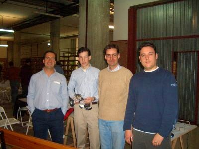 |
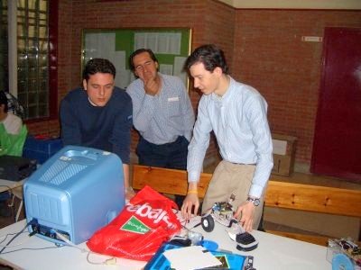 |
Allí nos encontramos con Fernando Remiro, al que no conocíamos personalmente y tuvimos la ocasión de charlar y hacernos fotos :-). (Foto de la izquierda). Había venido con alumnos de su instituto a concursar. ¡Ojalá yo hubiese tenido profesores así en BUP!. En la foto de la derecha se pueden ver las gradas que montó la organización para que los espectadores pudiesen ver el concurso.
|
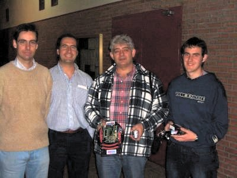 |
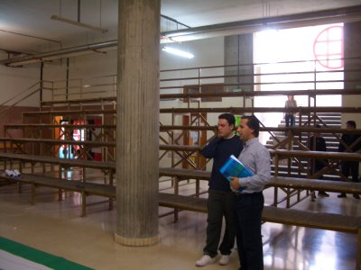 |
Aquí vemos Javi en los preparativos del concurso. Además de organizador hizo de juez, contabilizando las puntuaciones de los robots. En la foto de la derecha vemos a la gente en las gradas, esperando a que comience la prueba de velocistas. En el ordenador se puede ver a Javi. En la primera fila de la grada están Alejandro y Fernando, que no pierden detalle.
|
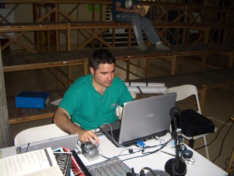 |
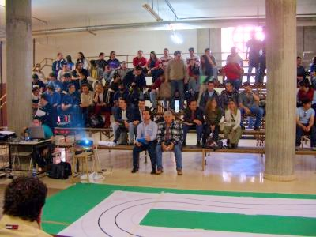 |
David Velaso, otro de los organizadores, que hizo de “speaker”, también participó como concursante. En la foto de la derecha vemos a sus criaturas que compentían en velocistas: Neptuno, X-43A y Cíclope. Mención especial merece el robot Cíclope, no sólo por su cuidado diseño estético sino por ser el único robot conocido que es capaz de recorrer el circuito de velocistas usando sólo un único sensor!!! (De ahí el nombre de cíclope). Además el controlador es totalmente analógico, sin necesidad de usar ningún microcontrolador. Cíclope se llevó el premio al robot más innovador.
|
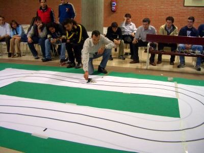 |
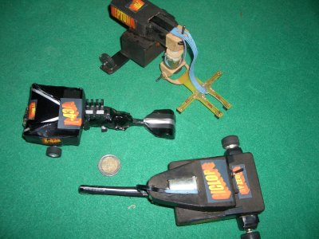 |
Después de comer (por cierto, Javi y David, qué comida tan buena!!) nos fuimos a Palencia a ver a Seguritron, el robot creado por Jose Luis M. Fraile. Alejandro había hablado con él por teléfono y muy amablemente se ofreció a enseñárnoslo. Más que un robot, eso es una obra de arte. Tuvimos el privilegio de entrar su laboratorio y allí nos sacamos algunas fotos. Tanto Alejandro como yo nos quedamos alucinados. Es el mejor robot que jamás haya visto. Teniendo gente como Jose Luis, ¿quién necesita a los americanos?. Aprovecho para agradecerle, tanto por parte mía como por la de Alejandro, el tiempo que nos dedicó y sobre todo por contarnos algunos de los “secretos” de la construcción de Seguritrón. Muchas gracias por compartir tu robot y tu experiencia con nosotros ;-)
|
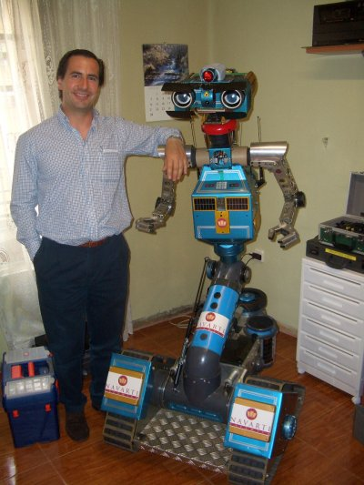 |
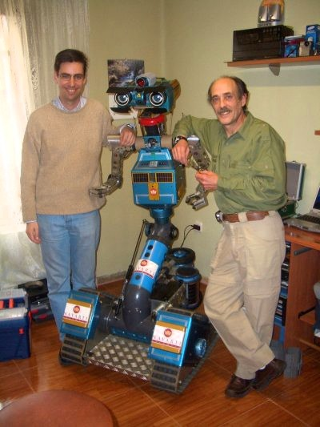 |
El día siguiente, por la tarde, Alejandro y yo impartimos nuestras conferencias. Alejandro habló sobre los diferentes tipos de robots “curiosos” que existen e hizo una demostración de su robot hexápodo Melanie III. En la conferencia de Cube Revolutions presenté por primera a vez a Multicube e hice demostraciones de las tres configuraciones actuales.
|
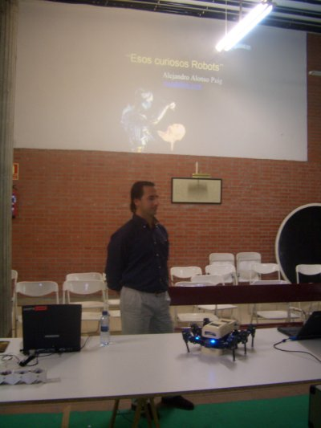 |
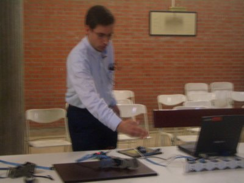 |
Y allí también estaba Francisco Carabaza (acicuecalo) al que no conocíamos personalmente y tuvimos la suerte de hacernos una foto con él. Fue una lástima que no tuviese más tiempo para tomarse un café con nosotros. Pero seguro que coincidiremos en otros eventos ;-)
|
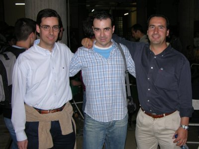 |
En la foto de la izquierda, Francisco está viendo las tripas de Melanie III. Según me comentó Alejandro, Francisco le había ayudado en las versiones iniciales del hexápodo. En la foto de la derecha está viendo una de las configuraciones de Multicube. En la mesa está Cube Revolutions. Fue una lástima que no nos pudiese enseñar a sus criaturas, pero es la excusa perfecta para quedar para otra ocasión ;-)
|
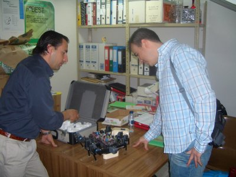 |
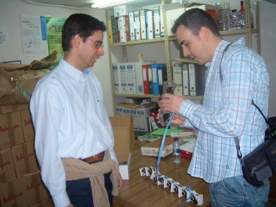 |
La foto de familia de Robolid 2005. De izquierda a derecha: Javier Herrero, David Velasco, Alejandro Alonso, Alberto Calvo, Daniel Álvarez y Juan González.
|
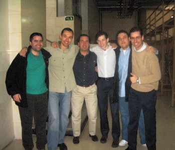 |
...y después del concurso a salir de marcha por Valladolid!!!! Javi no pudo venir con nosotros porque tenía otros compromisos. Fue una lástima, porque lo pasamos realmente bien :-) En las fotos de abajo estamos: Vicente, Dani, Alberto, Alejandro, Juan y David. Muchas gracias a David y Vicente por sacarnos de marcha :-)
|
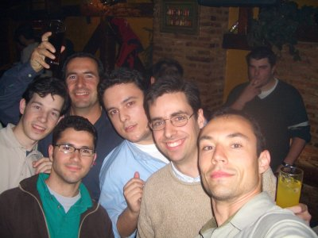 |
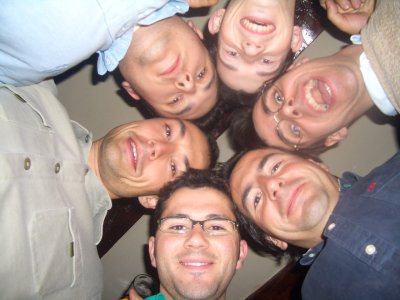 |
A la asociación AMUVa por habernos invitado a Robolid05. Especialmente a Javier Herrero, presidente de la asociación, que fue quién se ha encargado de que pudiésemos estar allí.
A Javier Herrero y a David Velasco por todo el tiempo que nos han dedicado. Muchas gracias por esas estupendas comidas y por enseñarnos Valladolid, tanto de día como de noche. Ah! y muchas gracias también por las botellas de vino :-). Os podemos asegurar que nunca nos olvidaremos de la Robolid05.
Jose Luis M. Fraile, el creador de Seguritron por dedicarnos su tiempo libre y enseñarnos detalladamente el robot. !Muchas gracias!
1/Enero/2005: Añadido enlace a Cube Revolutions
21/Abril/2005: Publicada información en esta web